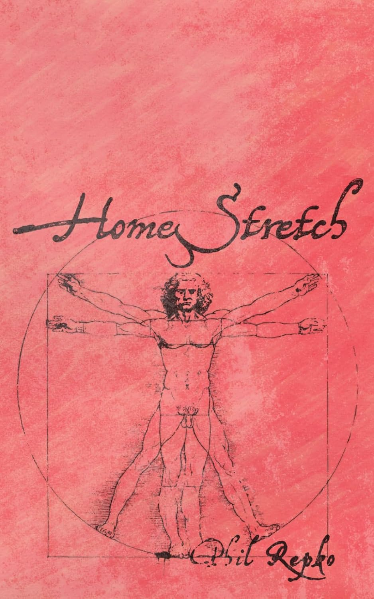

Writing
Words run in the family.
It's April, and my dad just published his second book of poetry. Feels like that means something...
Featured

New release
Homestretch
My dad's second collection of poetry. He's been writing his whole life — this is proof that it compounds. Read it slowly, or you'll miss everything.
Get it on Amazon ↗Poetry month
April 2025
For Better or Verse
My dad and brother run a poetry site at forbetterorverse.com — We have a poem going up every day, all month. Take a look. (It's like 8 years of poetry, at least)